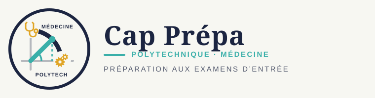

Un tronc commun (méthode, rigueur) se sépare en deux branches. En haut, la branche médecine se termine par un tracé d’électrocardiogramme et un point ocre. À droite, la branche polytechnique se termine par une roue dentée ocre, symbole de l’ingénierie.
